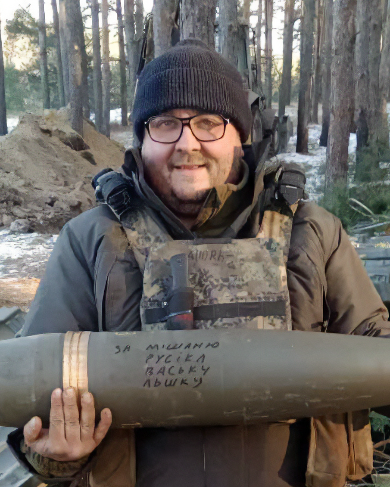

Історія Андрія Радецького – це не про нагороди чи страх. Це про спокійний та усвідомлений вибір. Він один з тих українців, які у вирішальний момент зробили важливий крок та поїхали туди, де небезпечно.. І саме з таких історій складається майбутнє нашої країни.
Андрій народився 25 квітня 1985 року в місті Соснівка в Сокальському районі (нині – Шептицький район). Про своє дитинство розповідає коротко: «У нас містечко шахтарів. Нічого особливого – я був як усі діти, ходив до школи… Колись любив колекціонувати ножі, а зараз, в дорослому віці, люблю роботу – екскаватори. А ще в мене був самогонний апарат».
Його дядько, Юрій Філіпчук, завідувач відділенням «Видавнича справа та редагування», згадує дитинство племінника так: «Андрій був дуже веселою та активною дитиною, з якою пов’язано багато цікавих історій. Я ж його, вважайте, з самого дитинства знаю».
Закінчив школу в 2000 році та вступив до «Львівського поліграфічного технікуму УАД» на спеціальність «Друкарське виробництво», де навчався до 2004 року. Пригадуючи про студентські роки, він з особливою теплотою згадує викладача фізики Василя Богдановича.
«Це був початок 2000-их – ніхто тоді не хотів вчитись. Зібрались з одногрупниками і йшли кудись на Високий замок, ну або в центр гуляти. Це вже зараз цікавіше – є інтернет, якісь заняття», – розповідає Андрій та дивується, що відтоді минуло 25 років.
«Я не можу сказати, що він вчився добре, бувало різне…», – усміхається Юрій Сергійович, згадуючи про студентські роки племінника.
Після закінчення технікуму, продовжив навчання в Українській академії друкарства. За спеціальністю пропрацював недовго. Згодом зрозумів, що це не його й обрав іншу професію.
24 лютого 2022 року без сумніву змінило життя кожного українця – й Андрій не виключення. Він пригадує той день так: «Я був трохи здивований, чесно кажучи, адже до останнього думав, що вони не нападуть. Для себе ще до війни розумів: якщо це почнеться – треба буде йти воювати».
Уже в травні 2022 року, налагодивши всі свої справи вдома, він вступив до лав ЗСУ. За його словами, сім’я була шокована таким рішенням. Дружина не хотіла, щоб чоловік йшов на фронт, але поважала його вибір та розуміла позицію Андрія.
«Коли ми дізнались, що Андрій іде служити, то ми всі були в шоці, а особливо мама… Але він вже все вирішив, хоча спершу його навіть не хотіли брати в військкоматі», – ділиться спогадами Юрій Сергійович.
«Я попав в десантно-штурмову бригаду й усі в сім’ї думали, що це все..», – так описує реакцію близьких Андрій.
«На початку було достатньо охочих, мене навіть в військкоматі відмовляли та сказали, щоб я подумав до завтра. Тоді було розуміння, що треба зібратись, відбити це – та й все. Адже втікати не було куди, а де втечеш?».
Служив Андрій в 95-й окремій десантно-штурмовій бригаді. Його позивний – «Дзідзьо», він пояснює його так: «Я носив великі окуляри та зелений капелюх. А ще й через нашу західну вимову – для них це було схоже на розмову Дзідзьо. Окуляри, капелюх, розмова – і зразу хтось сказав: “О, то що за Дзідзьо нам привели?”».
Про свою роботу Андрій розповідає стримано. Зазначаючи, що часто сам працював на завданнях. Його робота полягала в тому, щоб за допомогою екскаваторів вкопувати міномети, артилерію і виконувати бойову роботу.
«Стосунки з побратимами? Ну як сказати… Зібралась групка хлопців і кожен знає, що може нині загинути», – реальність спілкування з побратимами передає без жодних прикрас.
Андрій підкреслює, що важливою підтримкою на початку війни була саме фінансова допомога волонтерів, зокрема обслуговування екскаватора, яке було дорогим: «Це ж не військовий броньований трактор – це цивільна техніка. Там один прильот – і колеса пошкоджені, скло повилітало. А волонтери часто допомагали: купляли запчастини, надсилали гроші».
Про моральну підтримку говорить, що навпаки не чекав допомоги, а намагався заспокоювати своїх рідних.
«Не варто зараз точно казати тієї фрази: «Ми тебе туди не посилали». Знаю, що інколи таке звучить. Там люди віддають життя, а тут – таке. Якби той не пішов, то невідомо, де був би зараз той, хто це говорить», – окремо наголошує він.
На його думку, єдине чим можуть допомогти цивільні – це донатити на дрони, адже вони – дієва підтримка на фронті.
Серед відзнак Андрій має нагороду «Золотого хреста» від Олександра Сирського, головнокомандувача Збройних сил України та нагрудний знак «Знак пошани» від командувача десантно-штурмових військ.
«Я був радий, але вважаю, що ці відзнаки ні на що не впливають. Робота робиться – є відзнака чи нема. Я б швидше сказав, що це більше відзнака для сім’ї, для дітей і наступного покоління», – пояснює своє ставлення до цих нагород.
Особливе значення для нього має монета з надписом «Рускій воєнний корабль…» , яку йому подарували розвідники за виконання складного завдання.
«Ви ж розумієте, що на Донбасі – це все тяжка глина й якщо це не зробить екскаватор, то все впаде на руки людей із лопатами. Командир мене не заставляв туди їхати, але я це зробив. І вони подарували мені звичайну монету, але це для мене дуже важливо», – згадує з теплотою Андрій.
Інший батальйон подарував йому ніж із гравіюванням «95 штурмова бригада» за виконання роботи там, куди інші не хотіли їхати через високу небезпеку.
Андрій із надією розповідає, що постійно думає про життя після війни, адже хоче повернутись додому, до сім’ї. Хоче цивільного, звичайного життя – але вже іншого, набагато цікавішого, ніж до війни. Каже, що там багато чого переоцінюється: змінюється сенс та ставлення до матеріального.
«В будь-якій ситуації хочеться бути щасливим, біля сім’ї й щоб ніхто не хотів тебе вбити», – уже сміючись каже він.
Зараз Андрій перевівся до Львова, де продовжує службу у війську, а нам з вами каже таке: «Наступному поколінню я хочу передати, щоб ніколи не вірили росіянам – навіть через 100 років. Шевченко писав про це, а ми не дослухались, а тепер маємо…».
Підготувала Анна-Соломія Бурмеха, студентка спеціальності «Журналістика»